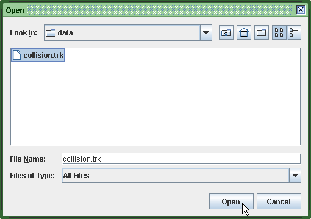
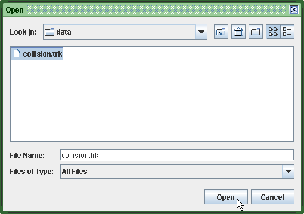
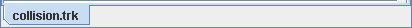
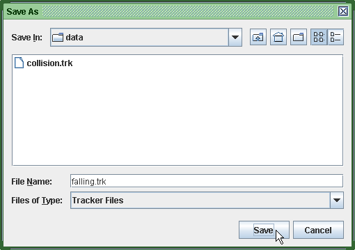
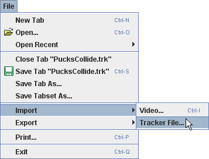
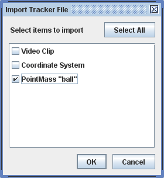
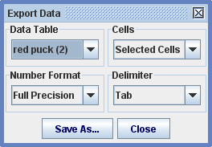

1. Odpiranje
datoteke tracker
Z gumbom Odpri ali preko menuja odpremo pogovorno okno, izberemo želeno datoteko in kliknemo na Odpri.



Tracker odpre datoteko v novem zavihku, ki kaže ime datoteke.
Datoteke
Tracker
Tracker shranjuje stanje posameznih zavihkov (video izrezek, koordinatni sistem, sledi in poglede) v datoteke tracker s podaljškom "trk", temelječe na xml. Ko odpremo shranjeno datoteko tracker, se v novem zavihku obnovi shranjeno stanje.
Lahko shranimo tudi skupino zavihkov , ki naslavlja več zavihkov (najprej moramo shraniti posamezne zavihke). Skupina zavihkov je ločena datoteka tracker (.trk), ki, ko jo odpremo, naenkrat naloži vse zavihke.
Položaji korakov, pomnjeni v datotekah tracker, so v koordinatah slike (piksli), tako da niso uporabni za neposredno analizo. Za dostop do podatkov sveta, ustreznim neki sledi, uporabimo pogled na podatkovno tabelo ali izvozimo podatke v tekstovno datoteko s podatki, ločenimi z ločili.
1. Odpiranje
datoteke tracker
Z gumbom Odpri ali preko menuja odpremo pogovorno okno, izberemo želeno datoteko in kliknemo na Odpri.

Tracker odpre datoteko v novem zavihku, ki kaže ime datoteke.

2. Shranjevanje zavihka
S klikom
na gumb Shrani 
 ali z menujsko
izbiro Datoteka|Shrani zavihek "ime datoteke" shranimo
spremembe v odprtem zavihku..
ali z menujsko
izbiro Datoteka|Shrani zavihek "ime datoteke" shranimo
spremembe v odprtem zavihku..
Novo datoteko tracker shranimo z izbiro Datoteka|Shrani kot... . Tracker bo datoteki avtomatsko dodelil podaljšek "trk".

Video posnetke, sledi oziroma koordinatni sistem bomo iz datoteke tracker uvozili v obstoječi zavihek s pomočjo izbire Uvoz|Tracker datoteka v menuju Datoteka. Izbrane zavihke lahko tudi izvozimo v datoteko tracker s pomočjo menujske izbire Izvoz.

Ko uvažamo datoteko tracker, vidimo razpoložljive elemente v pogovornem oknu, kar nam omogoča, da izberemo, kar želimo.

5. Direktno urejanje datoteke tracker
Datoteka tracker je berljiva in jo lahko urejamo s poljubnim urejevalnikom besedila. Format xml format je v skladu s specifikacijo doctype specification definirano v osp10.dtd.
6. Shranjevanje podatkov v tekstovno datoteko
Podatke, prikazane v podatkovni tabeli, lahko shranimo z izbiro postavke Izvoz|Datoteka. To odpre pogovorno okno za Izvoz podatkov, kot kaže slika.

V pogovornem oknu izberemo podatkovno tabelo in celice za izvoz, želeni številčni format (polna natančnost ali kotje formatirano v tabeli), in ločilo, uporabljeno za razločevanje stolpcev. Datoteka je shranjena v tekstovnem formatu z ločili, kar omogoča uvoz v preglednice, oblikovalnike besedil in mnoge druge aplikacije.